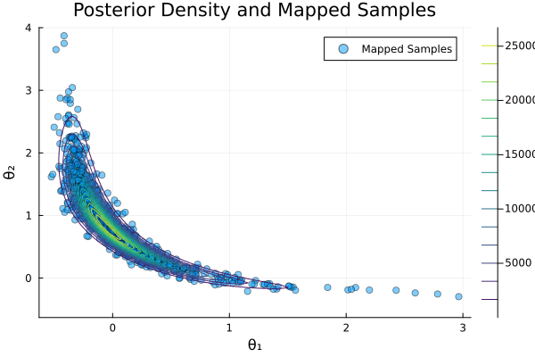

Biochemical Oxygen Demand (BOD) Example
This example demonstrates Bayesian parameter estimation for a biochemical oxygen demand model using transport maps. The problem comes from environmental engineering and was originally presented in [12] and later used as a benchmark in transport map applications [1].
The model describes the evolution of biochemical oxygen demand (BOD) in a river system using an exponential growth model with two uncertain parameters controlling growth and decay rates.
using TransportMaps
using Plots
using DistributionsThe Forward Model
The BOD model is given by:
\[\mathcal{B}(t) = A(1-\exp(-Bt))+ \varepsilon\]
where the parameters $A$ and $B$ unknown material parameters and $\varepsilon \sim \mathcal{N}(0, 10^{-3})$ represents measurement noise.
The parameters $A$ and $B$ follow the prior distributions
\[A \sim \mathcal{U}(0.4, 1.2), \quad B \sim \mathcal{U}(0.01, 0.31)\]
In order to describe the input parameters in an unbounded space, we transform them into a space with standard normal prior distributions $p(\theta_i) \sim \mathcal{N}(0, 1)$. We write $A$ and $B$ as functions of the new variables $\theta_1$ and $\theta_2$ with the help of a density transformation with the standard normal CDF $\Phi(\theta_i)$:
\[\begin{aligned} A &= 0.4 + (1.2 - 0.4) \cdot \Phi(\theta_1) \\ B &= 0.01 + (0.31 - 0.01) \cdot \Phi(\theta_2) \end{aligned}\]
We define the forward model as a function of $\theta$ and $t$ in Julia:
function forward_model(t, θ)
A = 0.4 + (1.2 - 0.4) * cdf(Normal(), θ[1])
B = 0.01 + (0.31 - 0.01) * cdf(Normal(), θ[2])
return A * (1 - exp(-B * t))
endExperimental Data
We have BOD measurements at five time points:
t = [1, 2, 3, 4, 5]
D = [0.18, 0.32, 0.42, 0.49, 0.54]
σ = sqrt(1e-3)Let's visualize the data along with model predictions for different parameter values:
s = scatter(t, D, label="Data", xlabel="Time (t)", ylabel="Biochemical Oxygen Demand (D)",
size=(600, 400), legend=:topleft)
# Plot model output for some parameter values
t_values = range(0, 5, length=100)
for θ₁ in [-0.5, 0, 0.5]
for θ₂ in [-0.5, 0, 0.5]
plot!(t_values, [forward_model(ti, [θ₁, θ₂]) for ti in t_values],
label="(θ₁ = $θ₁, θ₂ = $θ₂)", linestyle=:dash)
end
endBayesian Inference Setup
We define the posterior distribution using a standard normal prior on both parameters and a Gaussian likelihood for the observations:
\[\pi(\mathbf{y}|\boldsymbol{\theta}) = \prod_{t=1}^{5} \frac{1}{\sqrt{2\pi\sigma^2}}\exp\left(-\frac{1}{2\sigma^2}(y_t - \mathcal{B}(t))^2\right)\]
function posterior(θ)
# Calculate the likelihood
likelihood = prod([pdf(Normal(forward_model(t[k], θ), σ), D[k]) for k in 1:5])
# Calculate the prior
prior = pdf(Normal(), θ[1]) * pdf(Normal(), θ[2])
return prior * likelihood
end
target = MapTargetDensity(posterior, :auto_diff)MapTargetDensity(density=posterior, gradient_type=auto_diff)Creating and Optimizing the Transport Map
We use a 2-dimensional polynomial transport map with degree 3 and Softplus rectifier:
M = PolynomialMap(2, 3, :normal, Softplus(), LinearizedHermiteBasis())PolynomialMap:
Dimensions: 2
Total coefficients: 14
Reference density: Distributions.Normal{Float64}(μ=0.0, σ=1.0)
Maximum degree: 3
Basis: LinearizedHermiteBasis
Rectifier: Softplus
Components:
Component 1: 4 basis functions
Component 2: 10 basis functions
Coefficients: min=0.0, max=0.0, mean=0.0
Set up Gauss-Hermite quadrature for optimization:
quadrature = GaussHermiteWeights(10, 2)GaussHermiteWeights:
Number of points: 100
Dimensions: 2
Quadrature type: Tensor product Gauss-Hermite
Reference measure: Standard Gaussian
Weight range: [1.858172610271843e-11, 0.11877833902739371]
Optimize the map coefficients:
res = optimize!(M, target, quadrature)
println("Optimization result: ", res)Optimization result: * Status: success
* Candidate solution
Final objective value: -6.228607e+00
* Found with
Algorithm: L-BFGS
* Convergence measures
|x - x'| = 5.05e-09 ≰ 0.0e+00
|x - x'|/|x'| = 3.10e-09 ≰ 0.0e+00
|f(x) - f(x')| = 5.15e-14 ≰ 0.0e+00
|f(x) - f(x')|/|f(x')| = 8.27e-15 ≰ 0.0e+00
|g(x)| = 9.94e-09 ≤ 1.0e-08
* Work counters
Seconds run: 12 (vs limit Inf)
Iterations: 90
f(x) calls: 278
∇f(x) calls: 278Generating Posterior Samples
Generate samples from the standard normal distribution and map them to the posterior:
samples_z = randn(1000, 2)1000×2 Matrix{Float64}:
0.295457 -0.302962
-1.52653 1.92802
-0.0325041 -0.923011
-1.59504 0.417625
-0.874553 2.28185
-0.901239 -0.187737
-0.48873 -0.028528
-1.61611 1.24137
0.807255 -0.61456
-0.0349352 -0.00985345
⋮
-1.72791 1.60604
-0.58758 -1.74447
-0.0768438 0.771788
1.21447 0.277073
0.630369 0.837872
-0.819879 0.476936
0.722752 -0.202697
-0.987876 -2.43404
0.759901 1.3229Map the samples through our transport map:
mapped_samples = evaluate(M, samples_z)1000×2 Matrix{Float64}:
0.0313642 0.65318
-0.3583 2.86096
-0.0734553 0.737506
-0.366809 1.95209
-0.261921 2.36037
-0.266523 1.34827
-0.187142 1.15766
-0.369374 2.44229
0.249311 0.346358
-0.0741514 0.891339
⋮
-0.382615 2.80718
-0.207896 0.865236
-0.0859821 1.07635
0.487752 0.230993
0.16514 0.614505
-0.252282 1.50425
0.207805 0.433033
-0.281022 0.897082
0.225751 0.59753Quality Assessment
Compute the variance diagnostic to assess the quality of our approximation:
var_diag = variance_diagnostic(M, target, samples_z)
println("Variance Diagnostic: ", var_diag)Variance Diagnostic: 0.016361284803590524Visualization
Plot the mapped samples along with contours of the true posterior density:
θ₁ = range(-0.5, 1.5, length=100)
θ₂ = range(-0.5, 3, length=100)
posterior_values = [posterior([θ₁, θ₂]) for θ₂ in θ₂, θ₁ in θ₁]
scatter(mapped_samples[:, 1], mapped_samples[:, 2],
label="Mapped Samples", alpha=0.5, color=1,
xlabel="θ₁", ylabel="θ₂", title="Posterior Density and Mapped Samples")
contour!(θ₁, θ₂, posterior_values, colormap=:viridis, label="Posterior Density")
Finally, we can compute the pullback density to visualize how well our transport map approximates the posterior:
posterior_pullback = [pullback(M, [θ₁, θ₂]) for θ₂ in θ₂, θ₁ in θ₁]
contour(θ₁, θ₂, posterior_values./maximum(posterior_values);
levels = 5, colormap = :viridis, colorbar = false,
label="Target", xlabel="θ₁", ylabel="θ₂")
contour!(θ₁, θ₂, posterior_pullback./maximum(posterior_pullback);
levels = 5, colormap = :viridis, linestyle=:dash,
label="Pullback")
We can also visually observe a good agreement between the true posterior and the TM approximation.
This page was generated using Literate.jl.